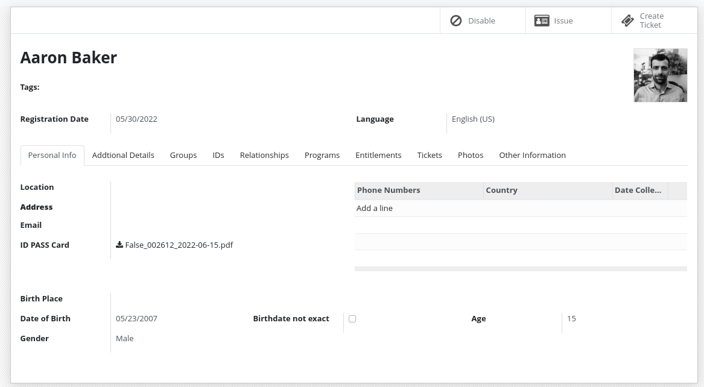
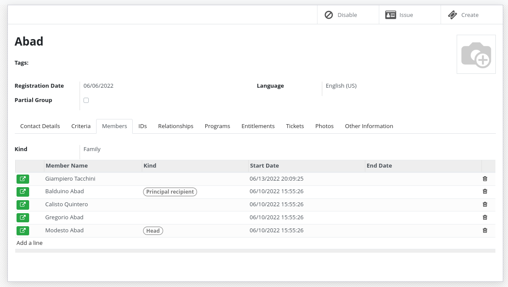
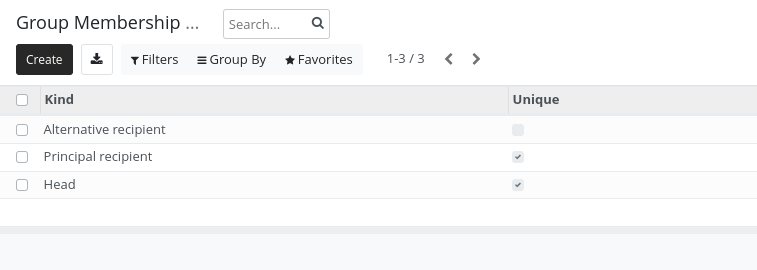
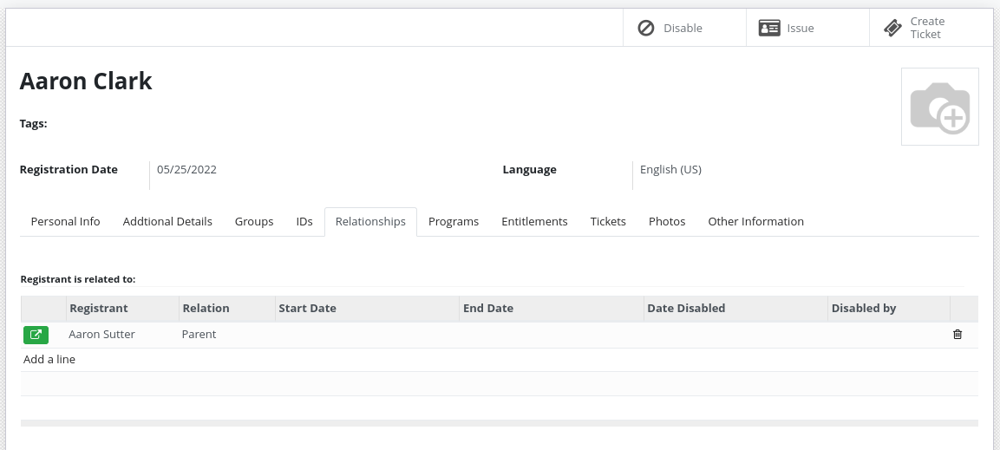
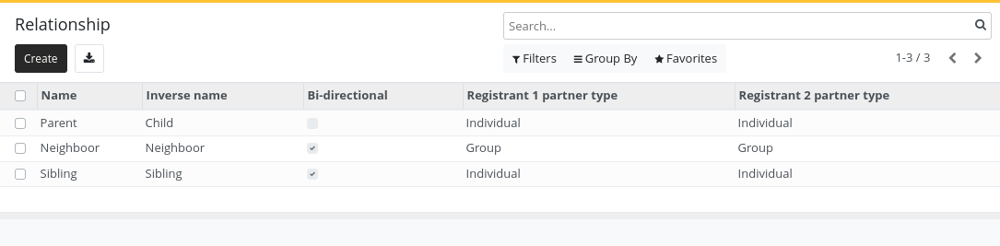

Key terminology
Contents
Key terminology#
Registrants are at the heart of OpenSPP. They are the people or groups that are being registered to be included in social protection programs.
A registrant can be:
A
groupAn
individual
Depending on the project's requirements, a registrant can simply contain a name or full biographic information, ID numbers, pictures, bank account numbers, phone numbers and more.
Important
Consider only collecting the data you really need when conducting a project.
Concepts#
Individual#
An individual is a registrant that represents a person.
It will have all the fields of a registrant plus some additional ones.


Group#
A group is a registrant that represents a set of individuals.
It will have all the fields of a registrant plus some additional ones.


For example, groups could represent:
Groups do not need to contain individuals registrants. They can just contain their number of members.
For example:
Adults: 2
Children: 3
Elderly: 2
Group membership#
Individuals can be part of one or more groups. They can have specific roles in a group.

By default, the following roles exist:
Head (only one per group)
Principal recipient (only one per group)
Alternative recipient
An admin has the right to add other roles using the configuration menu.

An individual can be the head of a group but have another or no role in another group.
Registrants relations#
When you need to store the relationship between registrants those relations can be useful.

You can define relationship type between different entities:
Group - Group
Individual - Individual
Individual - Group

For example:
Sibling (Individual - Individual)
Parent/Child (Individual - Individual)
Caretaker (Individual - Group)
Neighbour (Group - Group)
ID Documents#
Registrants can have one or more ID Documents.

The system does not enforce uniqueness of ID Documents by default. If uniqueness is required, deduplication should be performed.
ID Document types can be configured by an administrator.
Event Data#
Event data is a way to store information about a registrant that is not part of the registrant's profile. It allows to store information without the need to modify the registrant's profile, providing following benefits:
Store multiple version of the data
Manage separate data lifecycle, sharing agreements, etc.
Better manage the source of different data
Store data that should not be visible to all users
This data can be a lot of things:
House visit
Raw import data
Information coming from another system through synchronization
Data that loses relevance over time
The data stored in Event Data can be used in OpenSPP as a normal field by using computed fields.